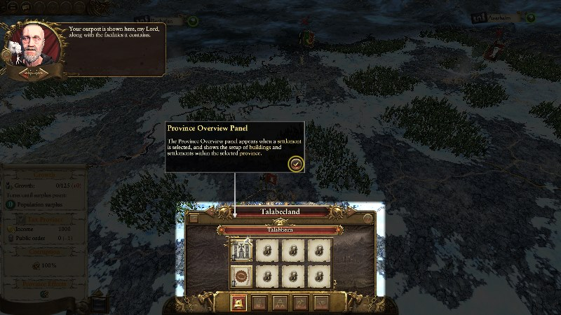

Scripted Tours
A scripted tour is a linear section of scripted gameplay where the script locks all player interaction with the game barring the minimum necessary for the player to perform a series of actions, often with the intention of showcasing a particular game feature to the player. The actions within a typical tour might include playing advice, showing text pointers, or placing fullscreen highlights around UI elements.
Scripted tours are commonly composed from multiple sections, or sequences. Each sequence, once started, triggers a series of actions that do things like show advice or scrolling the camera. At the end of each sequence a point which requires player input is typically reached, such as a button-click to dismiss the advisor or a text pointer. Once the player input is received it's usual for the tour to move on to the next sequence, or complete.
For example, a short tour may be composed of two action sequences - a main sequence and a second sequence with a particular name. In the main sequence, which plays by default when the tour is started, a fullscreen highlight is shown over some ui elements, some advice is played, and a text pointer with a close button points out a particular UI element. All this would be set up in one or more action callbacks associated with the main sequence. Once the text pointer close button is clicked, the script may direct the second action sequence to begin, which shows a different fullscreen highlight and a second text pointer - all set up in actions associated with the second sequence. Once the second text pointer is dismissed the script may direct the scripted tour to end, releasing the UI and control back to the player.
An example screenshot of a scripted tour, showing advice, a fullscreen highlight and a text pointer:

If a scripted tour is intended to be shown during live campaign gameplay then it's strongly recommended to always trigger it from within an intervention in order to control the flow of events around the tour that is triggering. Scripted tours may also be triggered in battle and the frontend.
Actions may be added to a scripted tour with scripted_tour:action. Along with the action callback to call, an interval must be specified for each action. A sequence name for the action may also be specified. If no such name is given, the actions are associated with the main sequence, which is played by default when the tour is first started. Actions added to a tour are called after the specified interval when the related tour sequence is started.
Once constructed, a tour may be started with scripted_tour:start. This function may be called again within the tour with a sequence name specified, in order to start a particular action sequence.
scripted_tour:complete may be called within the tour sequence to end the tour. If an end callback was supplied to scripted_tour:new it will be called at this time. Furthermore, when a scripted tour finishes it will trigger the script event ScriptEventScriptedTourCompleted, with the scripted tour name as the context string.
| Loaded in Campaign |
|
| Loaded in Battle |
|
| Loaded in Frontend |
|
See also the navigable_tour interface. Navigable tours are a extension of scripted tours.
Each scripted tour must be declared with scripted_tour:new. A unique name for the tour must be given, and an optional function to call when the tour ends (or is skipped) may also be supplied.
Once declared, actions may be added to the tour with scripted_tour:action. Each action is a function to be called at some timed interval after a sequence within the tour has started. It is through actions that events during the tour occur, such advice being displayed and buttons being highlighted. If no sequence name is supplied when declaring an action it is associated with the main action sequence, which is triggered by default when the tour is first started.
Once a scripted tour is declared and configured it may be started with scripted_tour:start. Supply no arguments to this function to start the main action sequence, or specify a sequence name to start a particular named action sequence.
From within the tour actions, all running sequences and the tour as a whole may be ended by calling scripted_tour:complete. Alternatively, the tour ends immediately if the player clicks on the skip button or if scripted_tour:skip is called. The tour must be ended by calling scripted_tour:complete or scripted_tour:skip after it has been started.
-
scripted_tour:new(namestring, [end callbackfunction]) -
Creates a scripted tour object. Each scripted tour must be given a unique string name and, optionally, an end callback which will be called when the scripted tour ends or is skipped.
Parameters:
1
Unique name for the scripted tour.
2
optional, default value=nil
End callback.
Returns:
scripted_tourscripted tour
defined in ../../Warhammer/working_data/script/_lib/lib_scripted_tours.lua, line 110
Once a scripted_tour object has been created with scripted_tour:new, functions on it may be called in the form showed below.
Example - Specification:
<scripted_tour_object>:<function_name>(<args>)
Example - Creation and Usage:
local st = scripted_tour:new(
"deployment",
function() end_deployment_scripted_tour() end
);
st_deployment:add_validation_rule( -- calling a function on the object once created
function()
return bm:get_current_phase_name() == "Deployment";
end,
"not in deployment phase"
);
Validation rules may be built into a scripted tour using scripted_tour:add_validation_rule, to allow it to know when it can be triggered. Validation rules added to a scripted tour are checked when that tour is started with scripted_tour:start, and should any fail then the scripted tour will fail to trigger.
Client scripts may also ask a scripted tour whether it is currently valid to trigger by calling scripted_tour:is_currently_valid. Should the tour not currently be valid then a reason value, supplied to scripted_tour:add_validation_rule when the rule is established, is returned to the calling script. This can be used by UI scripts, for example, to determine whether to enable or disable a scripted tour button, and to customise its appearance (e.g. change the tooltip) to indicate a reason why the tour can't currently be triggered.
Furthermore, context change listeners may be added to a scripted tour with scripted_tour:add_validation_context_change_listener by which a scripted tour may listen for events that may indicate its validation state changing. Should a scripted tour detect that a context change has altered its validation state it will trigger the script event ScriptEventScriptedTourValidationStateChanged which can be listened for by scripts elsewhere.
-
scripted_tour:add_validation_rule(callbackfunction, valuereason) -
Adds a validation callback. The supplied function will be called when the scripted tour is triggered with
scripted_tour:start, or validated withscripted_tour:is_currently_valid, and it must return a boolean value that indicates whether the validation rule passes.
Validation rules are checked in the same order in which they are added.Parameters:
1
Validation function.
2
valueReason value. This can be a value of any type. It will be returned to scripts that call
scripted_tour:is_currently_validif this validation rule fails.Returns:
nil
defined in ../../Warhammer/working_data/script/_lib/lib_scripted_tours.lua, line 190
-
scripted_tour:add_validation_context_change_listener(event namestring, [conditionfunction]) -
Starts a listener for the supplied scripted event. Should it be received, and should the optional condition also pass, the current validation state is checked against that previously cached. If the validation state has changed then the
ScriptEventScriptedTourValidationStateChangedis triggered which scripts elsewhere can listen for and react to. This allows UI scripts that may be displaying an option to launch a scripted tour to update the state of that launch option as the game context changes.Parameters:
1
Name of script event to monitor.
2
optional, default value=true
Condition to check if the event is received.
Returns:
nil
defined in ../../Warhammer/working_data/script/_lib/lib_scripted_tours.lua, line 210
-
scripted_tour:is_currently_valid() -
Checks whether this scripted tour is currently able to trigger. If the tour is not currently valid to trigger then the reason specified when setting the rule up with
scripted_tour:add_validation_ruleis returned.Returns:
booleanvaluereason value if invalid
defined in ../../Warhammer/working_data/script/_lib/lib_scripted_tours.lua, line 246
Actions must be added to a scripted tour if it is to do anything. Action callbacks added to a tour are called by that tour once the tour is started with scripted_tour:start. Actions are added with an action time, which specifies how long the scripted tour should wait after being started before calling the action. Pending actions are cancelled when a tour is skipped or completed, so if this happens before an action is called then it will never be called.
Actions may optionally be added to a 'sequence' by specifying a string sequence name when calling scripted_tour:action. Different sequences in a scripted tour may be started by calling scripted_tour:start with the sequence name.
-
scripted_tour:action(functioncallback, numberinterval, [stringsequence]) -
Adds an action to the scripted tour to be called at a specified time after the scripted tour starts. If no sequence is specified then the action is added to the main tour sequence, otherwise the action will be added to the sequence given.
Parameters:
1
functionCallback function to call.
2
numberInterval after the scripted tour starts at which the specified action should be triggered. This should be given in seconds in campaign, and in ms in battle and the frontend.
3
stringoptional, default value=nil
Sequence to add the action to. If no sequence name is specified then the action will be added to the main sequence.
Returns:
nil
defined in ../../Warhammer/working_data/script/_lib/lib_scripted_tours.lua, line 282
-
scripted_tour:append_action(functioncallback, numberinterval, [stringsequence]) -
Adds an action to the scripted tour to be called at the same time as the last currently-registered action of the specified sequence. If no sequence is specified then the action is added to the main tour sequence, otherwise the action will be added to the sequence given. If additional actions are added after
append_actionis calledParameters:
1
functionCallback function to call.
2
numberInterval after the scripted tour starts at which the specified action should be triggered. This should be given in seconds in campaign, and in ms in battle and the frontend.
3
stringoptional, default value=nil
Sequence to add the action to. If no sequence name is specified then the action will be added to the main sequence.
Returns:
nil
defined in ../../Warhammer/working_data/script/_lib/lib_scripted_tours.lua, line 336
-
scripted_tour:add_skip_action(skip actionfunction, [namestring]) -
Adds a skip action to the scripted tour, which will be called if the scripted tour is skipped (but not called if it is completed normally). This can be used to register callbacks that clean up after the tour if it is skipped suddenly - stop listeners, undo changes to the UI etc.
A name may be given for the skip action, by which it can be removed later. Some rules apply here:
- If no name is given then, after it is registered, the skip action will be removed whenever one scripted tour sequence ends and another begins.
- If a name is given, then after it is registered the skip action will not be removed as a new sequence starts, but only if
scripted_tour:remove_skip_actionis called. - If
trueis supplied as a name then the skip action will not be removed when a new sequence starts, and will always be called if the tour is skipped.
Parameters:
1
Skip callback to call if this scripted tour is skipped.
2
optional, default value=nil
Name for this skip action. This may also be
trueto not apply a name (see explanation above).Returns:
nil
defined in ../../Warhammer/working_data/script/_lib/lib_scripted_tours.lua, line 375
-
scripted_tour:remove_skip_action(namestring) -
Remove a skip action from the scripted tour by name. If multiple skip actions share the same name then all will be removed.
Parameters:
1
name
Returns:
nil
defined in ../../Warhammer/working_data/script/_lib/lib_scripted_tours.lua, line 411
-
scripted_tour:set_should_hide_text_pointers_on_completion([should hideboolean]) -
Scripted tours will hide all visible
text_pointerobjects upon completion by default. This function may be used to suppress this behaviour if desired.Parameters:
1
optional, default value=true
should hide
Returns:
nil
defined in ../../Warhammer/working_data/script/_lib/lib_scripted_tours.lua, line 446
-
scripted_tour:set_should_dismiss_advice_on_completion([should dismissboolean]) -
Scripted tours will dismiss advice upon completion by default. This function may be used to suppress this behaviour if desired.
Parameters:
1
optional, default value=true
should dismiss
Returns:
nil
defined in ../../Warhammer/working_data/script/_lib/lib_scripted_tours.lua, line 458
-
scripted_tour:set_steal_esc_key([steal esc keyboolean]) -
Instructs the scripted tour to steal the escape key on start. If the ESC key is pressed the tour is skipped.
Parameters:
1
optional, default value=true
steal esc key
Returns:
nil
defined in ../../Warhammer/working_data/script/_lib/lib_scripted_tours.lua, line 470
-
scripted_tour:set_disable_all_shortcuts_in_campaign([should disableboolean]) -
Sets whether all UI shortcuts are disabled in campaign, while the tour is running. UI shortcuts are disabled by default - use this function to change this behaviour.
Parameters:
1
optional, default value=true
should disable
Returns:
nil
defined in ../../Warhammer/working_data/script/_lib/lib_scripted_tours.lua, line 482
-
scripted_tour:set_exit_on_battle_start([should exitboolean]) -
Sets whether the scripted tour should automatically complete if a battle is started in campaign. This behaviour is enabled by default - use this function to disable it.
Parameters:
1
optional, default value=true
should exit
Returns:
nil
defined in ../../Warhammer/working_data/script/_lib/lib_scripted_tours.lua, line 494
-
scripted_tour:set_allow_camera_movement([allow movementboolean]) -
Scripted tours will prevent camera movement whilst active, by default. Use this function to allow the player to move the camera while the scripted tour is active. It can be used before the tour starts or while the tour is running.
Parameters:
1
optional, default value=true
allow movement
Returns:
nil
defined in ../../Warhammer/working_data/script/_lib/lib_scripted_tours.lua, line 506
-
scripted_tour:set_close_info_overlays([should closeboolean]) -
Sets whether the tour should close any open info overlays when it starts. By default, this behaviour is enabled - use this function to suppress it.
Parameters:
1
optional, default value=true
should close
Returns:
nil
defined in ../../Warhammer/working_data/script/_lib/lib_scripted_tours.lua, line 543
A scripted tour will do nothing until it is started with scripted_tour:start. If no argument is specified with this call then the main sequence of actions (i.e. those that were not added to a sequence) is started, otherwise the action sequence with the specified string name is started.
Once started, a scripted tour will remain active until it is skipped or until the main action sequence is completed using scripted_tour:complete. Calling this function with no arguments will complete the main action sequence (and the tour as a whole), whereas calling it with the name of a sequence will stop just that sequence. It is the responsibility of external scripts, usually those called within a scripted tour action, to complete the scripted tour.
A scripted tour may be skipped by the player clicking on the skip button (if it is shown), which calls scripted_tour:skip. Alternatively, this function may be called directly.
When a scripted tour finishes it will trigger the script event ScriptEventScriptedTourCompleted, with the scripted tour name as the context string.
-
scripted_tour:start([stringsequence name]) -
Starts the scripted tour or a scripted tour sequence. The first time this function is called the scripted tour as a whole starts. If no arguments are supplied the main action sequence commences, otherwise the actions associated with the specified sequence will start.
Parameters:
1
stringoptional, default value=nil
sequence name
Returns:
nil
defined in ../../Warhammer/working_data/script/_lib/lib_scripted_tours.lua, line 583
-
scripted_tour:skip() -
Skips the scripted tour. This is called when the player clicks on the skip button, but may be called by external scripts. This will immediately terminate the tour and all running action sequences.
Returns:
nil
defined in ../../Warhammer/working_data/script/_lib/lib_scripted_tours.lua, line 733
-
scripted_tour:complete_sequence([stringsequence name]) -
Instructs the scripted tour to complete an action sequence. Do this to cancel the sequence and prevent any further actions from that sequence being triggered. If no sequence name is specified then the main action sequence is completed.
Note that calling this function does not complete the tour as a whole, which must still be terminated withscripted_tour:complete.Parameters:
1
stringoptional, default value=nil
sequence name
Returns:
nil
defined in ../../Warhammer/working_data/script/_lib/lib_scripted_tours.lua, line 766
-
scripted_tour:complete() -
Instructs the scripted tour to end after it has been started. All running action sequences will be terminated.
Returns:
nil
defined in ../../Warhammer/working_data/script/_lib/lib_scripted_tours.lua, line 802